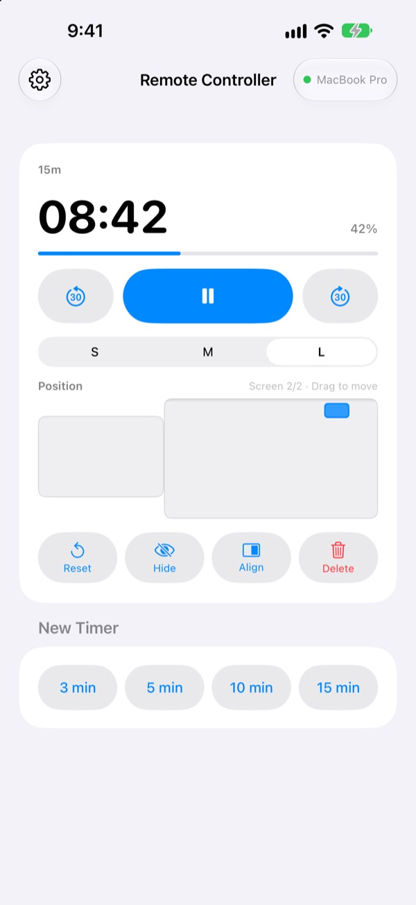
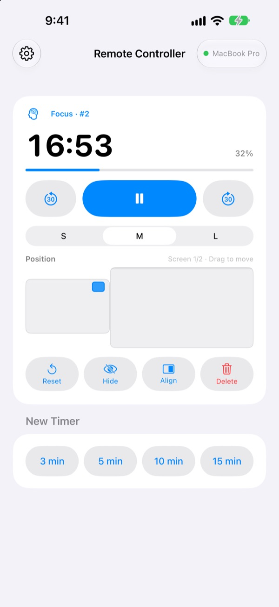
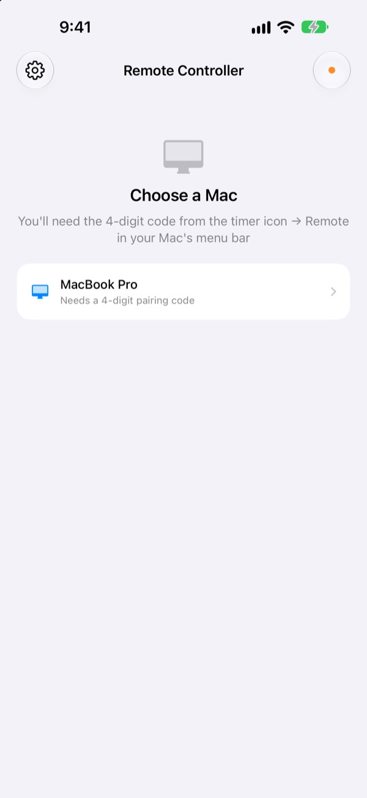

Leave the Mac behind.
Keep the timer in hand.
Control StickyPresenter's timers on your Mac from your iPhone. Walk to the front of the room and still see the time left, pause, add 30 seconds, or slide the timer off the chart it's covering.
Free · iOS 17 or later · Needs a Mac running StickyPresenter on the same Wi‑Fi.

Still walking back to your laptop to touch the timer?
Your talk runs long and you want more time. The timer is sitting right on top of your best chart. Until now that meant crossing the stage and reaching for the trackpad in front of everyone. With Remote Controller, you stay where you are and tap your iPhone once.
See the time left and fix it on the spot
Time left and progress update every second. In a Pomodoro you also see whether it's Focus or Break and which cycle you're on.
Running long? Add 30 seconds. Wrapping up early? Take 30 away. Start a new 3, 5, 10 or 15 minute timer with one tap, and switch the widget between S, M and L so the back row can read it.

Enter a code once, and that's it
Open the app and every Mac on your Wi‑Fi running StickyPresenter shows up in a list. Pick yours and type the four-digit code from the timer icon ▸ Remote in the Mac's menu bar.
After that, the app connects to that Mac by itself whenever you open it. No account, no server: the two devices talk directly over your local network.

Up and running in three steps
- 1
Open StickyPresenter on your Mac
When the timer icon is in the menu bar, you're ready. The app stays there even with every window closed.
- 2
Open the app on the same Wi‑Fi
When it asks for Local Network access, tap Allow. That's how it finds your Mac.
- 3
Pick your Mac and enter the code
Type the four-digit pairing code from the timer icon ▸ Remote in the Mac's menu bar, and you're in control.
What you can do from your iPhone
- Time left
- Remaining time, progress, Pomodoro Focus or Break and the cycle number, every second
- Start · Pause
- One big button in the middle
- −30 s · +30 s
- The buttons on either side adjust a running timer instantly
- New timer
- 3, 5, 10 or 15 minutes
- Size
- Widget in S, M or L
- Position
- Drag it on a miniature of your Mac's screen layout, even across to an extended display
- Hide
- Hide the widget from your audience for a moment
- Align
- Bring a lost widget back next to the timer window
- Reset · Delete
- Start the timer over, or remove it
- Shortcuts · Siri
- Say
Start a timer with Remote Controllerto put a timer on your Mac
The remote only works with timers running on your Mac. Sticky notes and teleprompter scripts are never sent to the iPhone, and it does not advance slides.
Questions
Can I use the iPhone app on its own?
No. Remote Controller is the remote for StickyPresenter on Mac, so StickyPresenter has to be running on a Mac on the same Wi‑Fi. Get the Mac app from the link below, or from Get the Mac App in the app's Settings.
My Mac doesn't show up in the list.
If no Mac appears after 10 seconds, the app shows a checklist. Work through it from the top: StickyPresenter is running on the Mac (look for the timer icon in the menu bar), both devices are on the same Wi‑Fi (guest networks won't work), Remote Controller is turned on in the iPhone's Settings ▸ Privacy & Security ▸ Local Network, StickyPresenter is allowed in the Mac's System Settings ▸ Privacy & Security ▸ Local Network, and any VPN is off.
It says the pairing code is wrong.
Enter the four digits shown right now under the timer icon ▸ Remote in the Mac's menu bar. If someone pressed New Pairing Code on the Mac, only the new code works.
It says the Mac doesn't remember this iPhone.
That happens after Forget Paired Remotes on the Mac, or after reinstalling StickyPresenter. Tap the Mac in the list and enter the pairing code once more.
It says the Mac didn't respond.
Make sure the Mac isn't asleep, both devices are on the same Wi‑Fi, and any VPN is off.
It says the Mac app needs an update.
StickyPresenter on your Mac is older than the remote. Update it from the Mac App Store, then pick the Mac again.
Is it safe in a meeting room full of Macs?
Yes. The remote only talks to the one Mac it's paired with, and a remote that doesn't know your code can't reach your Mac. Everything travels over an encrypted, direct connection on the same network. If you've ever shown your code to someone, press New Pairing Code on the Mac.
What goes out over the internet?
Your timers and commands never leave your local network. The only things sent over the internet are anonymous usage statistics, crash reports and feedback you choose to send. The privacy policy has the details.
Can Siri start a timer right before I go on?
Yes. Say "Start a timer with Remote Controller", or use the Start Timer on Mac action in Shortcuts. The app opens and starts a timer of the length you chose (1 to 600 minutes) as soon as it connects to your Mac.
Questions, bugs or ideas? Email mizzking75@gmail.com, or send them straight from your iPhone under the gear at the top left of the app ▸ Feedback.